Black stays black.
Every wallpaper keeps a calm, dark left half: windows stay readable, and the image never fights the work.
DEEP BLACK. INSTRUMENT AMBER. REAL HARDWARE.
A dome at night. Instrument light.
Servers, antennas, and you at the terminal.
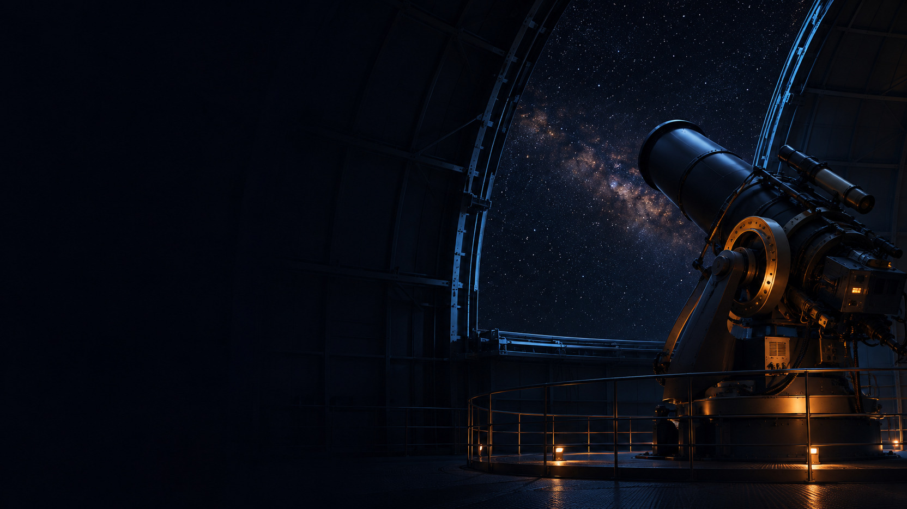
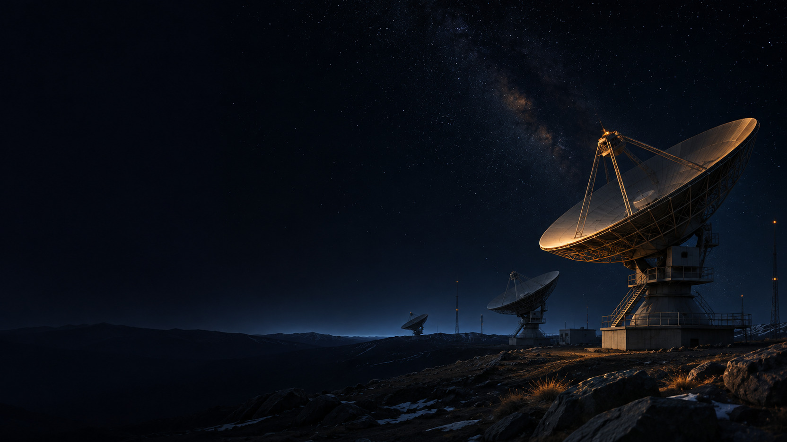
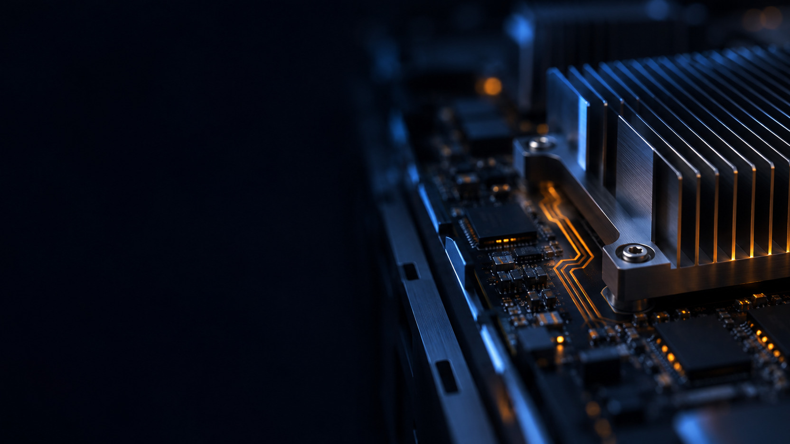
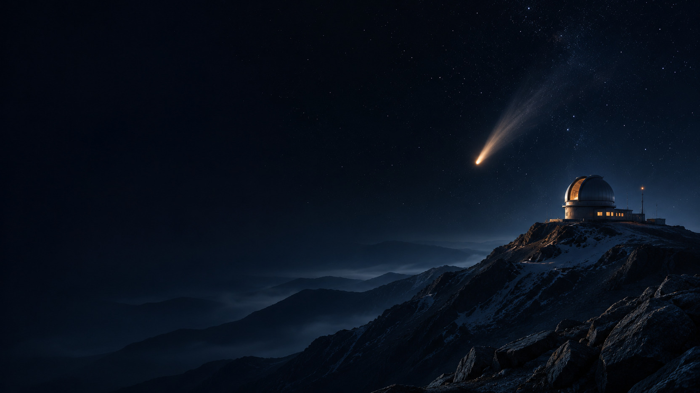
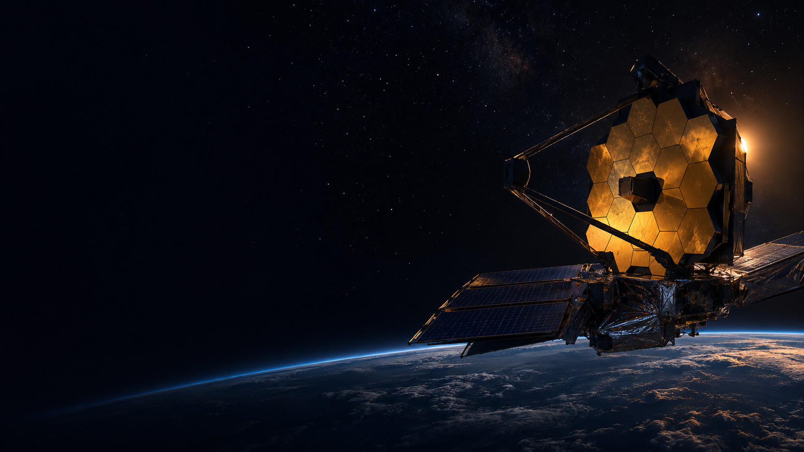
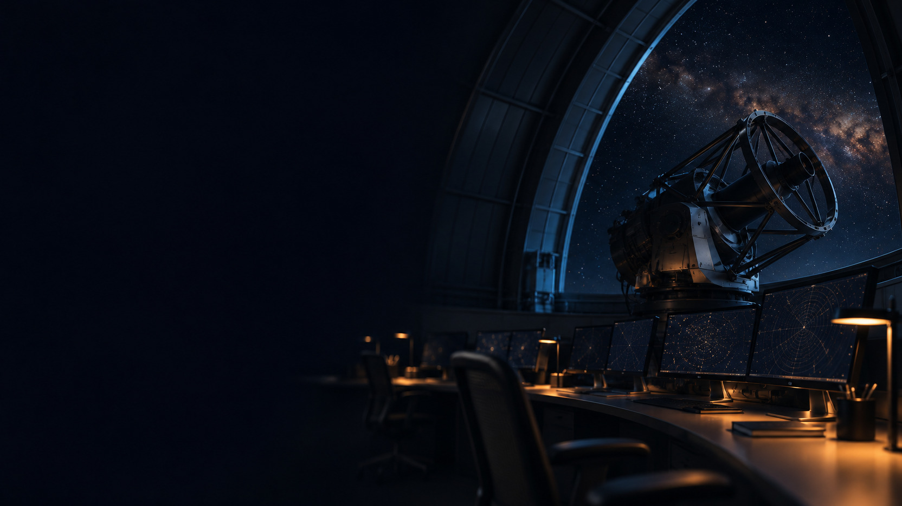
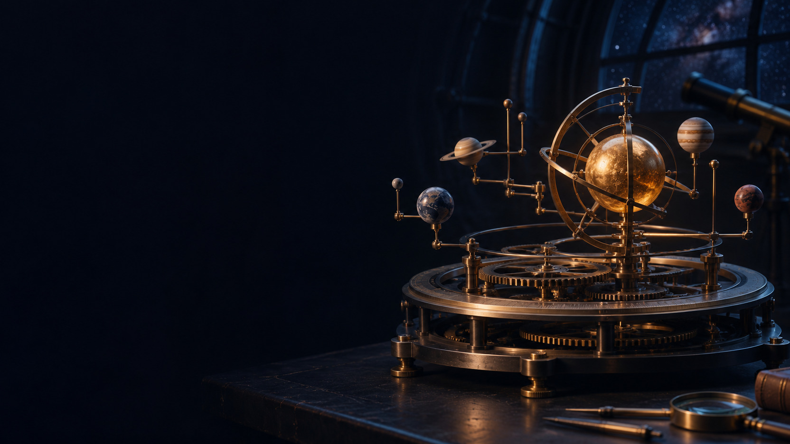
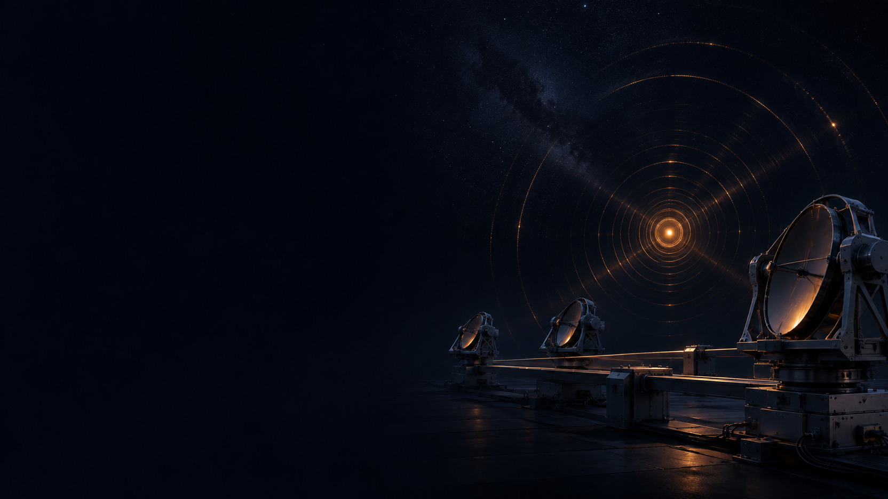
observer@omarchy ~/night
❯ cat direction.txt
Original palette · synthetic wallpapers
❯
AI-generated artworks (Codex CLI built-in image tool, ChatGPT subscription), not photographs or screenshots. Illustrative HTML mockup: bar, window and notification are simulated. No system command is executed from this page.
Every wallpaper keeps a calm, dark left half: windows stay readable, and the image never fights the work.
Active border amber → sky blue, cold blue focus, amber selection. Red errors and yellow warnings stay unambiguous.
No font forced, no keybinding added, no animation. The theme goes through Omarchy's native templates and its colors.toml.
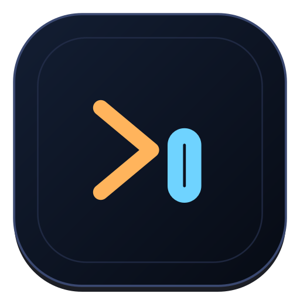
Terminal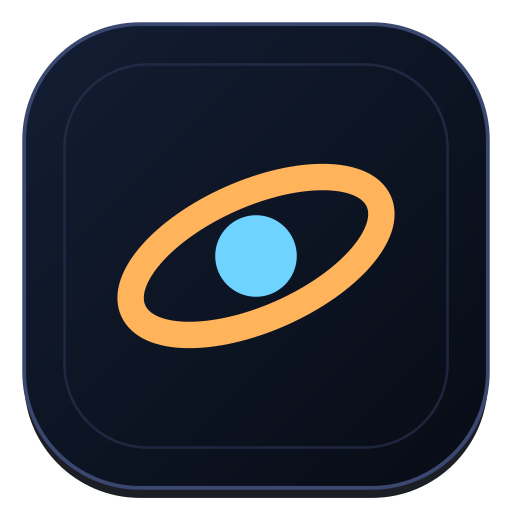
Browser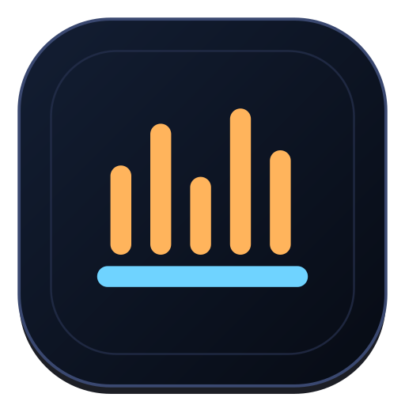
cliamp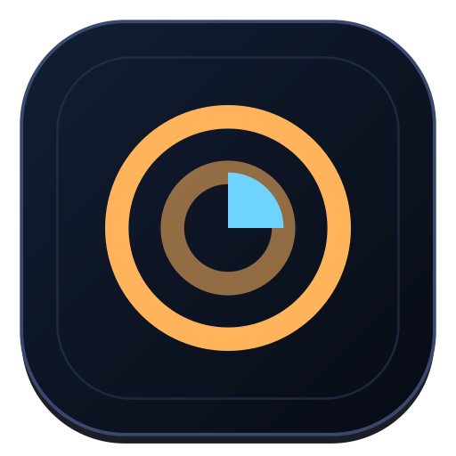
disktree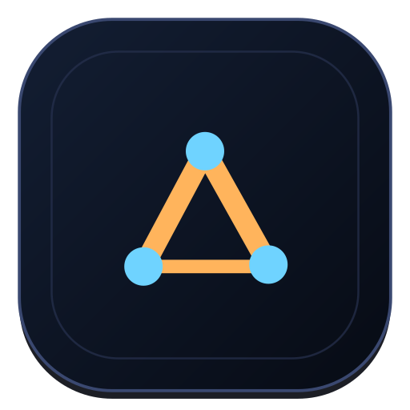
Gliff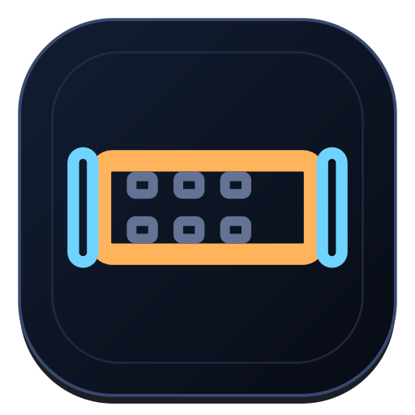
Omacut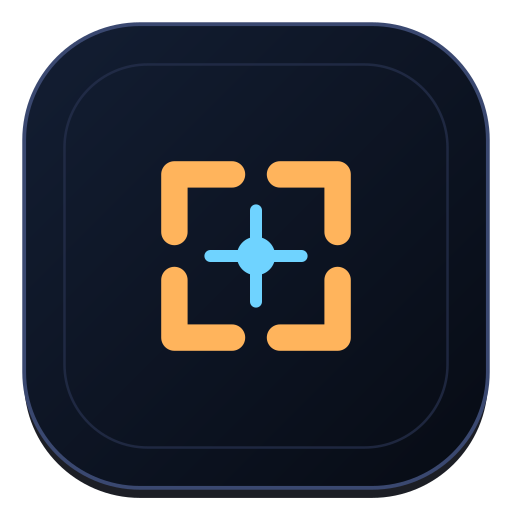
OmasnapEach icon replaces the one Omarchy draws from the palette: indigo plate, steel edge, 22-unit amber stroke and a single sky-blue marker. They fill the same area as the launcher in the dock.
An observatory and a server room in one palette: the scientific instrument, the network rack, the same amber light.No third-party image, brand or artwork was reused.
Activated on November 14, 2026.
Wallpaper 01 in place, amber → sky blue border verified.
omarchy theme set deep-fieldThis page executed no command.